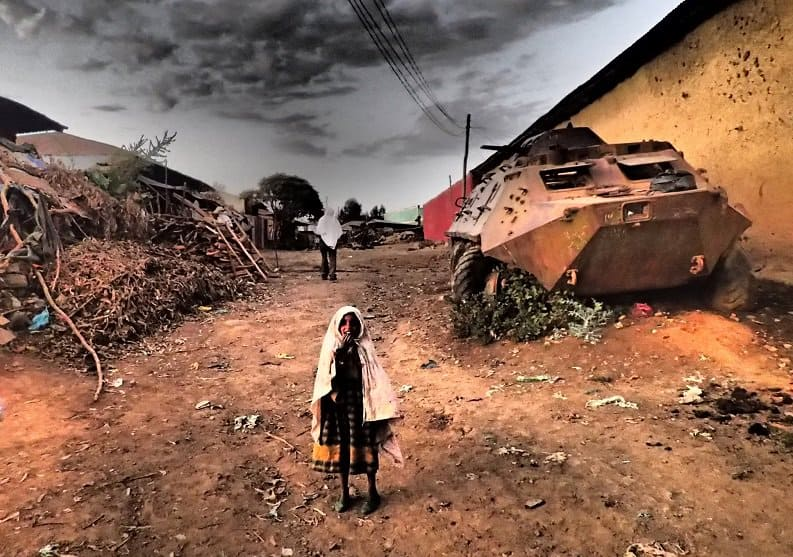

In 1989, the United Nations’ Convention on the Rights of a Child (UNCRC)
was established in a bid to end child mortality,
declaring"all children have the right to life, survival and development, and be
protected from violence, abuse or neglect."
Since the UNCRC’s ratification, the global child mortality rate
has continued to decline steeply,
as governments around the world work to deliver intervention measures, staving off preventable causes of
death.
And it's no coincidence that the drop in child mortality reflects an equally affirming decline in extreme poverty.
Driven by rapid global economic growth, 1.2 billion people are now living with better access to basic needs, particularly clean water, food and health care. (World Vision, 2021)
With a generally higher standard of living, more children are growing up in healthier and safer environments.
However, some parts of the world continue to be disrupted in their journey to end child mortality, as a result of insurgency and armed conflict.
Prolonged conflicts are known to generate large scale displacement crises, subsequently "exacerbating poverty and food-insecurity." (Hayes, Lundy and Hallward, 2016)
As one of the regions most adversely affected by civil unrest, Sub-Saharan Africa continues to face the repercussions of war in the form of humanitarian crises and increased child mortality.
Lets see how.
According to data by the United Nations High Commissioner for Refugees (UNHCR), this is the internal
refugee
population of Sub-Saharan Africa since 1990.
Although the total number of refugees has never dropped below 2.5 million people, there are
two key displacement events in time - once around 1994, and the other, in very recent times.
First, let's have a look at what caused the spike in 1994.
Post World War II saw decades of resistance against European powers
finally come to an end in Sub-Saharan Africa, as dozens of nations declared independence.
However, colonial resistance was replaced with civil strife, which led to the displacement of
millions of innocent civilians, including children.

1977 - 1992 Mozambican Civil War
Armed conflict between Marxist and anti-communist forces within Mozambique finally came
to an end in 1992. But by this point, the damage was already done - in this same year, the refugee population out of Mozambique peaked, displacing over 1.5 million people.
1993 - 2005 Ethnic Violence and Civil War in Burundi
Political crisis escalated into ethnic violence, resulting in the massacre of thousands of Burundian people from various ethnic minorities.
These events displaced nearly 900 000 Burundians, who sought refuge in neighbouring countries.
1994 Rwandan Genocide
In similar scenes, the 1994 genocide initiated by armed militias,
resulted in the deaths of some 800 000 people. The extent of the violence prompted 2 million Rwandans to flee their home country in what was known as the Great Lakes Refugee Crisis.
From these events, and many like them, villages became warzones and innocent civilians were forced to leave behind the life
they knew.
But why was child mortality specifically impacted by this?
A child living in Sub-Saharan Africa was, and continues to be most at risk of preventable water-borne and infectious diseases.
They are 14 times less likely to survive past
the age of five, compared to children living in non-conflict zones around the world.
But as a refugee, these children are exposed to further risks, which exacerbate poor health.
birth complications
birth asphyxia
pneumonia
congenital anomalies
diarrhoea and malaria
deprivation of basic needs
limited access to medical care
separation from parents or family
gender-based violence and abuse
exploitation
The consequence? As a result of the events in the early 1990s,
child mortality
climbed by as much as 8 deaths per 1000 live births.
Although this doesn't seem like much, in Sub-Saharan Africa, this
represented an additional 180 000 children annually, who never lived to see their
fifth birthday.
The events in 1994 caused a mass exodus of innocent people who fled for their lives. Recalling the refugee numbers from earlier, it looks as though history is repeating itself.
Today, the South Sudanese Civil War, Somali Civil War and many other armed conflicts across the region
render Sub-Saharan Africa to be one of the most dangerous places in the world, to grow up as a child. (Save our Children, 2021)
The raging violence today, is a dire reflection of past events. We have already seen that civil wars
and mass displacement hurt children the most.
So what does this mean for the future of child mortality?
If the present day refugee crises simply did not happen, Sub-Saharan Africa was expected to see a sustained decline in their child mortality rate, as per the global trend.
However, the similarity of past and present refugee crises suggests that under-five deaths is likely to project upwards in the near future and continue to grow while refugee populations remain high.
Only when refugee populations subside, will Sub-Saharan Africa see their child mortality rate return to a new recovery phase.
The longer armed conflict pans out, the greater the refugee population, putting more and more children at risk.
Until civil conflicts are settled around the world, the fight to end child mortality may continue for longer than we may have hoped.